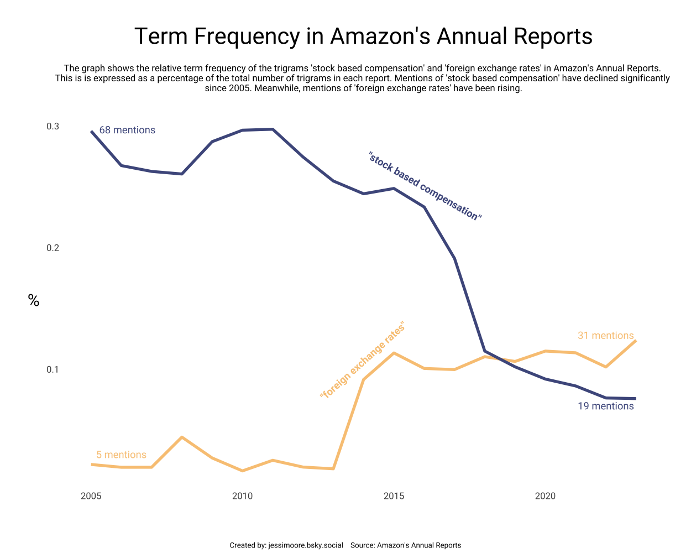

{kind=link}
Load Data and Libraries
tuesdata <- tidytuesdayR::tt_load(2025, week = 12)
report_words_clean <- tuesdata$report_words_clean
library(tidytext)
library(dplyr)
library(tidyr)
library(ggplot2)
library(sysfonts)
library(showtext)March 27, 2025
This week’s data was curated by Gregory Vander Vinne. I used the lead() function from dplyr to look at the ‘next’ word and create and investigate trigrams, rather than single words.
“Stock based compensation” was by far the most common trigram. However, it has been mentioned less and less since 2015.

trigrams <- report_words_clean %>%
mutate(word2 = lead(word),
word3 = lead(word2))
# common trigrams #
tri <- trigrams %>%
filter(!(word == word2),
!(word2 == word3),
!(word == word3)) %>%
unite(trigram, c("word", "word2", "word3"), sep = " ") %>%
group_by(year) %>%
count(trigram, sort = TRUE) %>%
slice_max(n, n = 10)
# this reveals "stock based compensation" and "foreign exchange rates" as common trigramstri_graph <- trigrams %>%
group_by(year) %>%
unite(trigram, c("word", "word2", "word3"), sep = " ") %>%
mutate(total_trigrams = n()) %>%
filter(trigram %in% c("stock based compensation", "foreign exchange rates")) %>%
count(year, total_trigrams, trigram) %>%
mutate(relative_freq = n/total_trigrams*100)
# fonts and text #
t <- "Term Frequency in Amazon's Annual Reports"
st <- "The graph shows the relative term frequency of the trigrams 'stock based compensation' and 'foreign exchange rates' in Amazon's Annual Reports.
This is is expressed as a percentage of the total number of trigrams in each report. Mentions of 'stock based compensation' have declined significantly
since 2005. Meanwhile, mentions of 'foreign exchange rates' have been rising."
cptn <- "Created by: jessimoore.bsky.social Source: Amazon's Annual Reports"
font_add_google("Roboto", "robo")
ft <- "robo"
showtext_auto()plot <- ggplot(tri_graph, aes(x = year, y = relative_freq, color = trigram)) +
geom_line(size = 1.5) +
annotate("text", x = 2016, y = 0.25, label = '"stock based compensation"',
color = "#4e598c", fontface = "bold", family = ft, angle = -30) +
annotate("text", x = 2006.2, y = 0.297, label = "68 mentions",
color = "#4e598c", family = ft) +
annotate("text", x = 2022, y = 0.07, label = "19 mentions",
color = "#4e598c", family = ft) +
annotate("text", x = 2014, y = 0.107, label = '"foreign exchange rates"',
color = "#f9c784", fontface = "bold", family = ft, angle = 42) +
annotate("text", x = 2006, y = 0.03, label = "5 mentions",
color = "#f9c784", family = ft) +
annotate("text", x = 2022, y = 0.128, label = "31 mentions",
color = "#f9c784", family = ft) +
labs(title = t, subtitle = st, caption = cptn,
x = NULL, y = "%") +
scale_color_manual(values = c("#f9c784", "#4e598c")) +
theme_minimal() +
theme(legend.position = "none",
panel.grid = element_blank(),
axis.text = element_text(family = ft, size = 10),
axis.title.y = element_text(family = ft, size = 18,
angle = 0, vjust = 0.5),
plot.title = element_text(family = ft, size = 25, hjust = 0.5),
plot.subtitle = element_text(family = ft, size = 10, hjust = 0.5,
margin = margin(10,0,20,0)),
plot.caption = element_text(family = ft, size = 8,
hjust = 0.5, vjust = -15),
plot.caption.position = "plot",
plot.margin = margin(30,30,40,30))